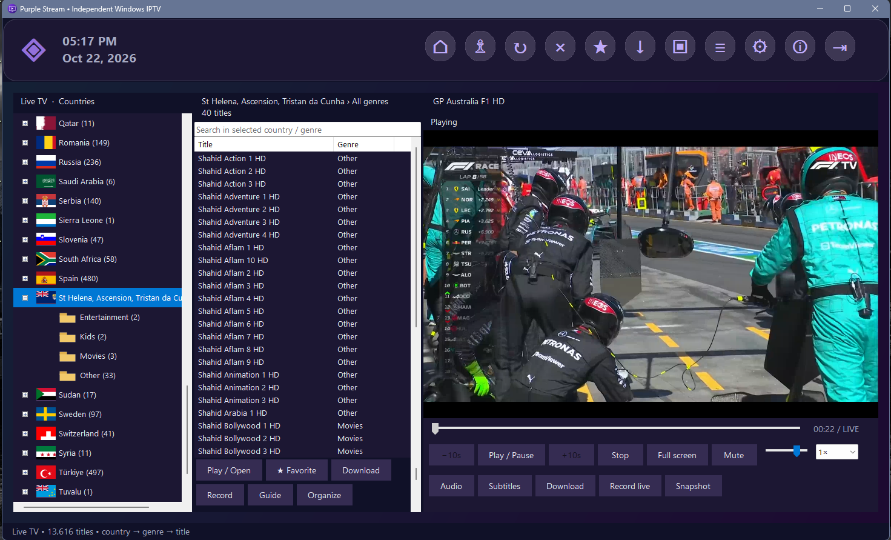
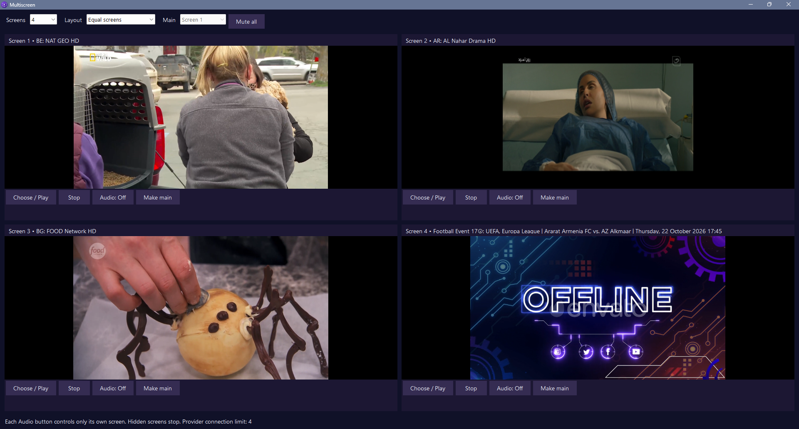
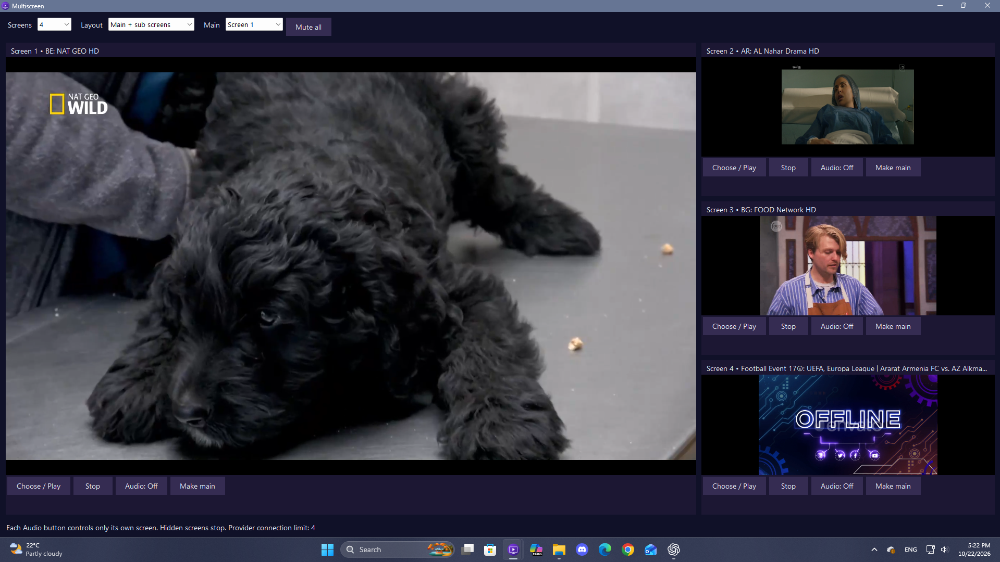

FROM THE OWNER'S DESKTOP
Playback in everyday use.
The owner supplied these screenshots of their installation. Displayed channels and programmes are examples only and are not included with the app. No provider credentials are shown. Country/category inference can require manual correction when provider metadata is ambiguous.




